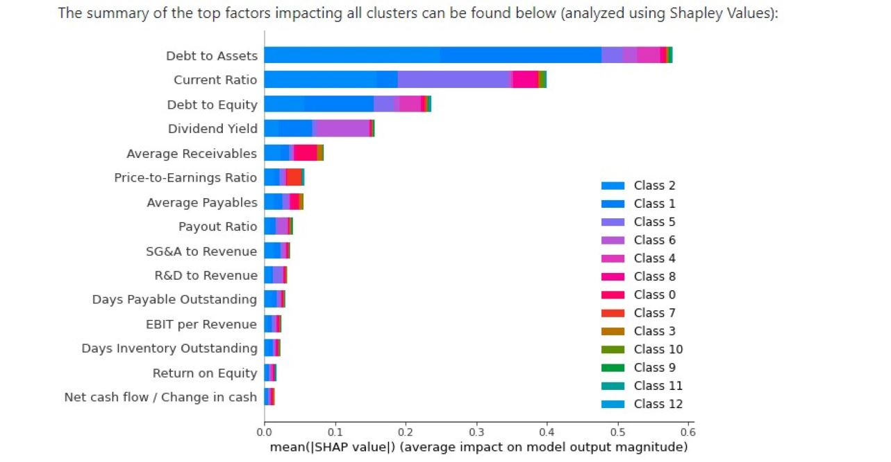
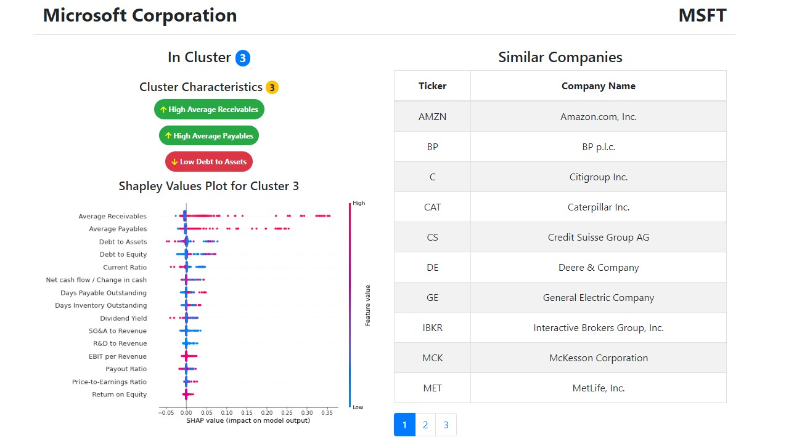

QMIND project completed with club
The Financial Statement Analysis project was undertaken in collaboration with QMIND, as an extracurricular club initiative. I served as a member of a multidisciplinary team, comprising three computer engineering students and two business students. Our collective objective was to delve into the realm of unsupervised learning and explore its potential in drawing meaningful connections from an extensive dataset of publicly available financial statements.
The involvement of our business student collaborators proved instrumental in determining the pertinent metrics for inclusion in our financial statement clustering process. We explored various clustering techniques, including k-means and hierarchical clustering, which initially yielded only two discernible clusters. However, our decision to implement an affinity propagation model ultimately led to a more refined outcome, producing a total of 13 distinct clusters that significantly enhanced our ability to differentiate between companies.
Subsequently, we embarked on an exploration of the underlying factors driving the assignment of companies to specific clusters. Employing a supervised learning approach, specifically Random Forests, in conjunction with Shapley values, we designated the cluster number as our target variable. This analysis allowed us to delve deeper into the characteristics that played a pivotal role in determining a company's placement within specific clusters. For a comprehensive overview of our research, including team members and the final research paper, kindly click on the button below.